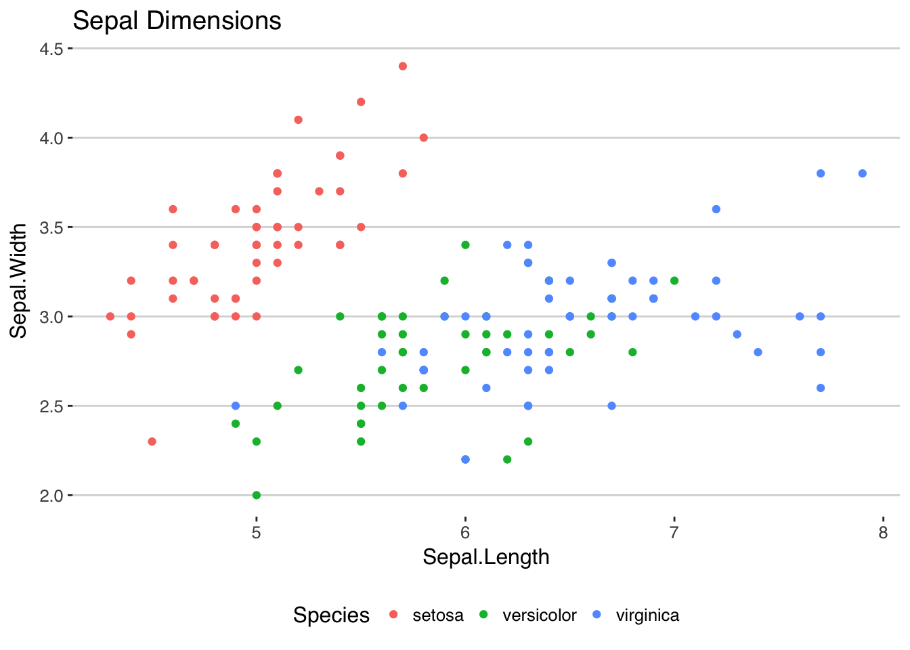

I'm a Data Scientist and technologist who is focused in building globally-oriented products using Machine Learning and Artificial Intelligence
©2017 Sebastian Perez Saaibi | Template by Bootstrapious.com & ported to Hugo by Kishan B
Hi! This is my first post. Here I’m just interested in exploring how to make some simple (but cool) plots, both static and dynamic using R.
Enjoy the results (and interact with them).
